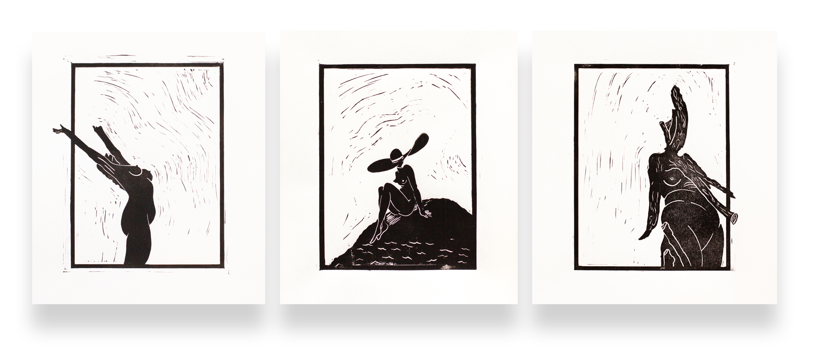

Watercolor paintings // Doors of Toronto
Started working on these last hall when I did an exchange semester at OCAD
in Toronto. The door is something we mostly take for granted but it says so much,
especially about accessibility. And the ones in Toronto are colourful and pretty!

LINOLEUM PRINTS
